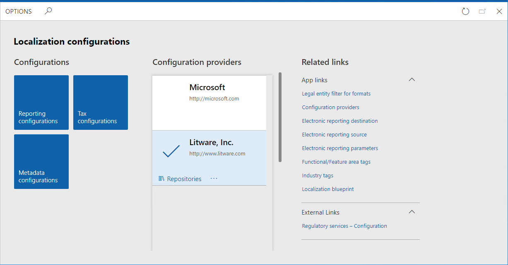
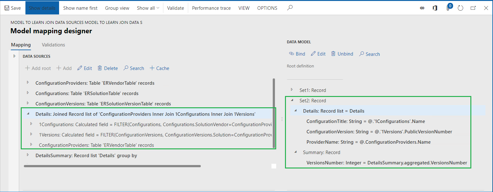
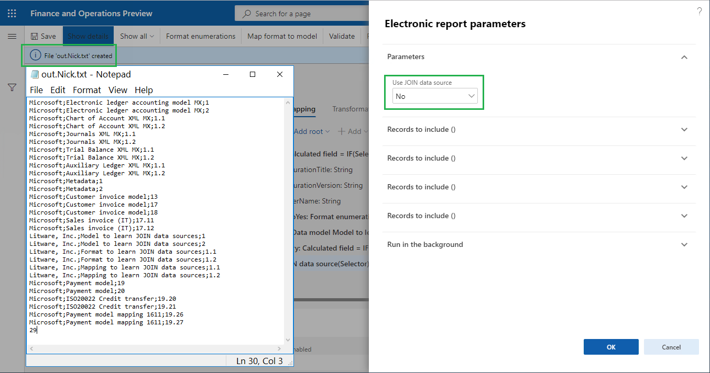
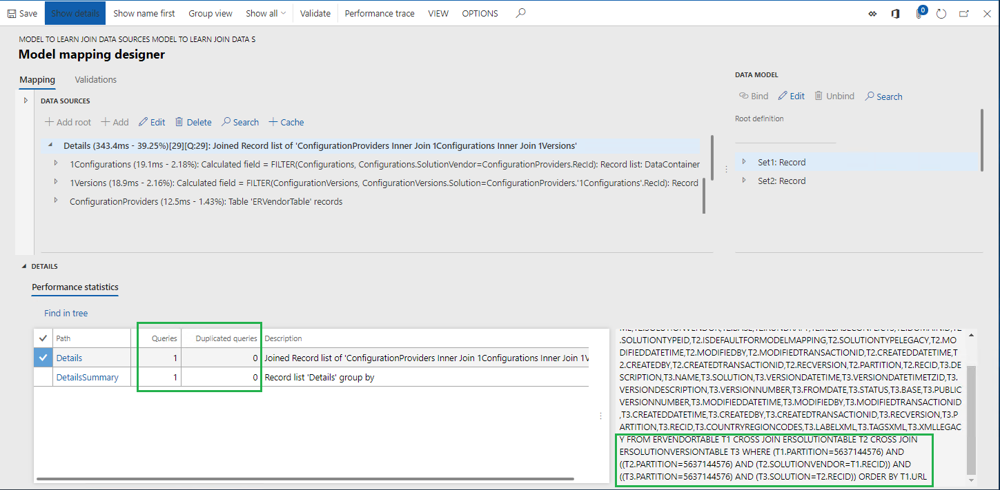

Verwenden Sie JOIN-Datenquellen in ER-Modellzuordnungen, um Daten aus mehreren Anwendungstabellen abzurufen
[!include[banner](../includes/banner.md)]Beim Konfigurieren von ER-Modellzuordnungen oder -formaten können Sie erforderliche Datenquellen vom Typ Join hinzufügen. Zur Entwurfszeit wird eine Join-Datenquelle als Satz mehrerer Datenquellen konfiguriert, von denen jede eine Liste der Datensätze zurückgibt. Für jede Datenquelle mit Ausnahme der ersten müssen die erforderlichen Bedingungen definiert werden, um Datensätze der aktuellen und früheren Datenquellen zu verknüpfen. Zur Laufzeit gibt eine konfigurierte Datenquelle vom Typ Join eine einzelne verknüpfte Liste von Datensätzen mit Feldern von Datensätzen von geschachtelten Datenquellen zurück.
Die folgenden Join-Typen werden derzeit unterstützt:
- (Linker) Außen-Join:
- Join aller Datensätze der ersten (am weitesten links stehenden) Datenquelle und dann alle passenden in Übereinstimmung mit konfigurierten Bedingungsdatensätzen der zweiten (äußersten rechten) Datenquelle.
- (Rechter) Innen-Join:
- Join nur von Datensätzen der ersten (am weitesten links stehenden) Datenquelle und nur von Datensätzen der zweiten (äußersten rechten) Datenquelle, die zueinander passen und in Übereinstimmung mit konfigurierten Bedingungen.
In der konfigurierten Join-Datenquelle, wenn alle Datenquellen vom Typ Table records sind, kann die Ausführung der Join-Datenquelle über eine einzelne SQL-Anweisung auf Datenbankebene durchgeführt werden. Diese Anweisung verringert die Anzahl von Datenbankaufrufen, was die Modellzuordnungsleistung verbessert. Andernfalls erfolgt die Ausführung der Join data-Quelle nur im Arbeitsspeicher.
Note
Die Verwendung der Funktion VALUEIN in ER-Ausdrücken, die Bedingungen zum Verknüpfen von Datensätzen in Datenquellen vom Join-Typ angeben, wird noch nicht unterstützt. Besuchen Sie die Seite Formeldesigner in der elektronischen Berichterstellung für weitere Details zu dieser Funktion.
Weitere Informationen über diese Funktion erhalten Sie, wenn Sie das Beispiel in diesem Thema abschließen.
Beispiel: Verwendung von JOIN-Datenquellen in ER-Modellzuordnungen
In den folgenden Schritten wird erklärt, wie der Systemadministrator oder der ER-Entwickler eine ER-Modellzuordnung konfigurieren kann, um Daten aus mehreren Anwendungstabellen gleichzeitig abzurufen, indem Datenquellen des Typs Join verwendet werden, um die Datenzugriffsleistung zu verbessern. Diese Schritte können für beliebige Unternehmen von Dynamics 365 Finance oder in den Regulatory Configuration Services (RCS) ausgeführt werden.
Voraussetzungen
Um die Beispiele in diesem Thema durchzuführen, müssen Sie Zugriff auf eines der Folgenden haben, abhängig von dem Dienst, der verwendet wird, um diese Schritte durchzuführen:
Zugriff auf Finance für eine der folgenden Rollen:
- Entwickler für elektronische Berichterstellung
- Funktionaler Berater für elektronische Berichterstellung
- Systemadministrator
Zugriff auf RCS für eine der folgenden Rollen:
- Entwickler für elektronische Berichterstellung
- Funktionaler Berater für elektronische Berichterstellung
- Systemadministrator
Sie müssen außerdem zunächst die Schritte unter der Prozedur Konfigurationsanbieter erstellen und als aktiv markieren durchführen.
Vorab müssen Sie auch die folgenden ER-Beispiel-Konfigurationsdateien vom Microsoft Download Center herunterladen und lokal speichern:
| Inhaltsbeschreibung | Dateiname |
|---|---|
| ER-Datenmodell-Beispielkonfigurationsdatei, die als Datenquelle für die Beispiele verwendet wird. | Model to learn JOIN data sources.version.1.1.xml |
| ER-Datenmodellzuordnung-Beispielkonfigurationsdatei, die das ER-Datenmodell für die Beispiele implementiert. | Mapping to learn JOIN data sources.version.1.1.xml |
| ER-Format-Beispielkonfigurationsdatei. Diese Datei beschreibt die Daten zum Auffüllen der ER-Formatkomponente für die Beispiele. | Format to learn JOIN data sources.version.1.1.xml |
Aktivieren eines Konfigurationsanbieters
Greifen Sie entweder auf Finance oder RCS in der ersten Sitzung des Webbrowsers zu.
Wechseln Sie zu Organisationsverwaltung >Arbeitsbereiche > Elektronische Berichterstellung.
Überprüfen Sie auf der Seite Lokalisierungskonfigurationen im Abschnitt Konfigurationsanbieter, ob der Konfigurationsanbieter für das Beispielunternehmen Litware, Inc. aufgeführt und als Aktiv markiert ist. Wenn Sie diesen Konfigurationsanbieter nicht sehen, müssen Sie zunächst die Schritte in der Prozedur Konfigurationsanbieter erstellen und als aktiv markieren befolgen.

ER-Beispielkonfigurationsdateien importieren
Wählen Sie Berichterstellungskonfigurationen aus.
Importieren Sie die ER-Datenmodellkonfigurationsdatei.
- Wählen Sie Wechselkurs aus.
- Wählen Sie Aus XML-Datei laden aus.
- Wählen Sie Durchsuchen aus, um die Model to learn JOIN data sources.version.1.1.xml-Datei zu suchen.
- Wählen Sie OK.
Importieren Sie die Konfigurationsdatei für die EB-Modellzuordnung.
- Wählen Sie Wechselkurs aus.
- Wählen Sie Aus XML-Datei laden aus.
- Wählen Sie Durchsuchen aus, um die Mapping to learn JOIN data sources.version.1.1.xml-Datei zu suchen.
- Wählen Sie OK.
Importieren Sie die ER-Formatkonfigurationsdatei.
- Wählen Sie Wechselkurs aus.
- Wählen Sie Aus XML-Datei laden aus.
- Wählen Sie Durchsuchen aus, um die Format to learn JOIN data sources.version.1.1.xml-Datei zu suchen.
- Wählen Sie OK.
In der Konfigurationsstruktur erweitern Sie das Element Model to learn JOIN data sources sowie weitere Modellelemente (falls verfügbar).
Achten Sie auf die Liste der ER-Konfigurationen in der Baumstruktur sowie die Versionsdetails auf der Versionen-Schnellregisterkarte – sie werden als Quelle der Daten für den Beispielbericht verwendet.
Aktivieren der Ausführungsablaufverfolgungsoptionen
Wählen Sie KONFIGURATIONEN aus.
Wählen Sie Benutzerparameter aus.
Legen Sie die Ausführungsablaufverfolgungsparameter wie im Screenshot unten fest.

Wenn diese Parameter aktiviert sind, wird für jede Ausführung der importierten ER-Formatdatei die Ausführungsablaufverfolgung generiert. Mithilfe der Details der generierten Ausführungsnachverfolgung können Sie die Ausführung der EB-Format- und EB-Modellzuordnungskomponenten analysieren. Besuchen Sie die Ausführung des EB-Formats nachverfolgen, um Leistungsprobleme zu behandeln-Seite für weitere Informationen zur ER-Ausführungsablaufverfolgungsfunktion.
Überprüfen der ER-Modellzuordnung (Teil 1)
Überprüfen Sie die Einstellungen der EB-Modellzuordnungskomponente. Die Komponente wird konfiguriert, um auf Informationen zu Versionen von ER-Konfigurationen, Details von Konfigurationen und Konfigurationsanbieter zuzugreifen, ohne Datenquellen des Typs Join zu verwenden.
Wählen Sie die Konfiguration Mapping to learn JOIN data sources aus.
Wählen Sie Designer aus, um die Liste der Zuordnungen zu öffnen.
Wählen Sie Designer aus, um die Zuordnungsdetails zu prüfen.
Wählen Sie Details anzeigen.
In der Konfigurationsstruktur erweitern Sie die Set1- und Set1.Details-Datenmodellelemente:
- Die Bindung Details: Record list = Versions gibt an, dass das Set1.Details-Element an die Datenquelle Versionen gebunden ist, die Datensätze der Tabelle ERSolutionVersionTable zurückgibt. Jeder Datensatz dieser Tabelle stellt eine einzelne Version einer ER-Konfiguration dar. Der Inhalt dieser Tabelle wird in der Versionen-Schnellregisterkarte auf der Seite Varianten angezeigt.
- Die Bindung ConfigurationVersion: String = @.PublicVersionNumber bedeutet, dass der Wert der öffentlichen Version der jeweiligen ER-Konfigurationsversion aus dem Feld PublicVersionNumber der ERSolutionVersionTable-Tabelle übernommen und dem ConfigurationVersion-Element hinzugefügt wird.
- Die Bindung ConfigurationTitle: String = @.'>Relations'.Solution.Name gibt an, dass der Name einer ER-Konfiguration aus dem Feld Name der ERSolutionTable-Tabelle übernommen wird, durch Bewertung über die Viele-zu-Eins-Beziehung ('>Relations') zwischen den Tabellen ERSolutionVersionTable und ERSolutionTable. Die Namen von ER-Konfigurationen der aktuellen Anwendungsinstanz werden in der Konfigurationsstruktur auf der Seite Varianten angezeigt.
- Die Bindung @.'>Relations'.Solution.'>Relations'.SolutionVendor.Name bedeutet, dass der Name des Konfigurationsanbieters, der die aktuelle Konfiguration besitzt, aus dem Feld Name der Tabelle ERVendorTable übernommen wird, durch Bewertung über die Viele-zu-Eins-Beziehung zwischen den Tabellen ERSolutionTable und ERVendorTable. Die Namen von ER-Konfigurationsanbietern werden in der Konfigurationsstruktur auf der Seite Varianten der Seitenkopfzeile für die jeweilige Konfiguration angezeigt. Die gesamte Liste der ER-Konfigurationsanbieter kann auf der Organisationsverwaltung > Elektronische Berichterstellung > Konfigurationsanbieter-Tabellenseite gefunden werden.
In der Konfigurationsstruktur erweitern Sie das Set1.Summary-Datenmodellelement:
- Die Bindung VersionsNumber: Integer = VersionsSummary.aggregated.VersionsNumber gibt an, dass das Set1.Summary.VersionsNumber-Element an das VersionsNumber-Aggregationsfeld der VersionsSummary-Datenquelle des GroupBy-Typs gebunden ist, der konfiguriert wurde, um die Anzahl der Datensätze der ERSolutionVersionTable-Tabelle über die Versionen-Datenquelle zurückzugeben.

Schließen Sie die Seite.
Überprüfen der ER-Modellzuordnung (Teil 2)
Überprüfen Sie die Einstellungen der EB-Modellzuordnungskomponente. Die Komponente wird konfiguriert, um auf Informationen zu Versionen von ER-Konfigurationen, Details von Konfigurationen und Konfigurationsanbieter zuzugreifen, unter Verwendung einer Datenquelle des Typs Join.
In der Konfigurationsstruktur erweitern Sie die Set2- und Set2.Details-Datenmodellelemente. Die Bindung Details: Record list = Details gibt an, dass das Element Set2.Details an die Details-Datenquelle gebunden ist, die als Datenquelle des Typs Join konfiguriert ist.

Die Join-Datenquelle kann hinzugefügt werden, indem die Datenquelle Functions\Join ausgewählt wird:

Wählen Sie die Details-Datenquelle aus.
Wählen Sie Bearbeiten im Bereich Datenquellen aus.
Wählen Sie Join bearbeiten aus.
Wählen Sie Details anzeigen.
Diese Seite wird verwendet, um die erforderliche Datenquelle des Join-Typs zu entwerfen. Zur Laufzeit erstellt diese Datenquelle eine einzelne verknüpfte Liste von Datensätzen der Datenquellen im Raster Verknüpfte Liste. Die Verknüpfung von Datensätzen startet aus der Datenquelle ConfigurationProviders, die im Raster als Erstes vorhanden ist (die Typ-Spalte ist dafür leer). Die Datensätze jeder anderen Datenquelle werden anschließend mit Datensätzen der übergeordneten Datenquelle basierend auf deren Reihenfolge in diesem Raster verknüpft. Jede verknüpfende Datenquelle muss als Datenquelle konfiguriert werden, die unter einer Zieldatenquelle geschachtelt wird (die
1Versions-Datenquelle wird unter1Configurationsgeschachtelt; die1Configurations-Datenquelle wird unter ConfigurationProviders geschachtelt). Jede konfigurierte Datenquelle muss die Bedingungen für die Verknüpfung enthalten. In der Datenquelle für diesen bestimmte Verknüpfung werden die folgenden Verknüpfungen definiert:- Jeder Datensatz der Datenquelle ConfigurationProviders (bezogen auf die Tabelle ERVendorTable) wird nur mit Datensätzen der 1Configurations-Datenquelle (auf die in der ERSolutionTable-Tabelle verwiesen wird) mit dem gleichen Wert in den Feldern SolutionVendor und RecId verknüpft. Der Typ Innen-Join wird für diese Verknüpfung verwendet, wie auch die folgenden Bedingungen für übereinstimmende Datensätze:
FILTER (Configurations, Configurations.SolutionVendor = ConfigurationProviders.RecId)
- Jeder Datensatz der Datenquelle 1Configurations (bezogen auf die Tabelle ERSolutionTable) wird nur mit Datensätzen der 1Versions-Datenquelle (bezogen auf die ERSolutionVersionTable-Tabelle) mit dem gleichen Wert in den Feldern Solution und RecId verknüpft. Der Typ Innen-Join wird für diese Verknüpfung verwendet, wie auch die folgenden Bedingungen für übereinstimmende Datensätze:
FILTER (ConfigurationVersions, ConfigurationVersions.Solution = ConfigurationProviders.'1Configurations'.RecId)
- Die Ausführen-Option wird als Abfrage konfiguriert, was bedeutet, dass diese Verknüpfungsdatenquelle zur Laufzeit auf Datenbankebene als direkter SQL-Aufruf ausgeführt wird.
Zum Verknüpfen von Datensätzen der Datenquellen, die Anwendungstabellen darstellen, können Sie Verknüpfungsbedingungen angeben, indem Sie Paare von Feldern verwenden, die nicht denen entsprechen, die vorhandene in AOT-Relationen zwischen diesen Tabellen beschreiben. Dieser Typ der Verknüpfung kann so konfiguriert werden, dass er auch auf Datenbankebene ausgeführt wird.
Schließen Sie die Seite.
Wählen Sie Abbrechen aus.
In der Konfigurationsstruktur erweitern Sie das Set2.Summary-Datenmodellelement:
- Die Bindung VersionsNumber: Integer = DetailsSummary.aggregated.VersionsNumber gibt an, dass das Set2.Summary.VersionsNumber-Element an das VersionsNumber-Aggregationsfeld der DetailsSummary-Datenquelle des GroupBy-Typs gebunden ist, der konfiguriert wurde, um die Anzahl der verknüpften Datensätze der Details-Datenquelle des Join-Typs zurückzugeben.
- Die Ausführen-Standortoption ist als Abfrage konfiguriert, was bedeutet, dass diese GroupBy-Datenquelle zur Laufzeit als direkter SQL-Aufruf auf Datenbankebene ausgeführt wird. Dieses Verhalten ist möglich, da die Basisdatenquelle Details des Typs Join so konfiguriert ist, dass sie auf der Datenbankebene ausgeführt wird.

Schließen Sie die Seite.
Wählen Sie Abbrechen aus.
ER-Format ausführen
Rufen Sie Finance oder RCS in der zweiten Sitzung des Webbrowsers mit den gleichen Anmeldeinformationen und dem gleichen Unternehmen wie in der ersten Sitzung auf.
Wechseln Sie zu Organisationsverwaltung > Elektronische Berichterstellung > Konfigurationen.
Erweitern Sie die Konfiguration Model to learn JOIN data sources aus.
Wählen Sie die Konfiguration Format to learn JOIN data sources aus.
Wählen Sie Designer aus.
Wählen Sie Details anzeigen.
Wählen Sie Zuordnung aus.
Wählen Sie Erweitern/Reduzieren aus.
Dieses Format wurde entwickelt, um eine generierte Textdatei mit einer neuen Position für jede Version einer EB-Konfiguration (Version-Nummernkreis) aufzufüllen. Jede generierte Position enthält den Namen eines Konfigurationsanbieters, der die aktuelle Konfiguration besitzt, den Namen der Konfiguration und die Version der Konfiguration, die von einem Semikolon getrennt wird. Die abschließende Position der generierten Datei enthält die Anzahl der erkannten Versionen von ER-Konfigurationen (Zusammenfassung-Nummernkreis).
Die Daten- und Zusammenfassung-Datenquellen werden verwendet, um Konfigurationsversionsdetails für die generierte Datei aufzufüllen:
- Die Informationen im Set1-Datenmodell werden verwendet, wenn Sie Nein für die Datenquelle Auswahl zur Laufzeit auf der Benutzerdialogfeldseite beim Ausführen des ER-Formats auswählen.
- Die Informationen im Set2-Datenmodell werden verwendet, wenn Sie Ja für die Datenquelle Auswahl zur Laufzeit auf der Benutzerdialogfeldseite auswählen.

Wählen Sie Ausführen aus.
Wählen Sie auf der Dialogfeldseite Nein im Feld JOIN-Datenquelle verwenden aus.
Wählen Sie OK.
Überprüfen Sie die generierte Datei.

Analysieren der ER-Formatausführungsablaufverfolgung
In der ersten Sitzung von Finance oder RCS wählen Sie Designer aus.
Wählen Sie Leistungsnachverfolgung aus.
Wählen Sie im Raster Leistungsnachverfolgung den obersten Datensatz der letzten Ausführungsablaufverfolgung eines ER-Formats aus, das die aktuelle Modellzuordnungskomponente verwendet hat.
Wählen Sie OK.
Die Ausführungsstatistiken informieren Sie über duplizierte Aufrufe der Anwendungstabellen:
- ERSolutionTable wurde so oft aufgerufen wie Konfigurationsversionsdatensätze in der Tabelle ERSolutionVersionTable vorhanden sind, während die Anzahl solcher Aufrufe zur Leistungsverbesserung verringert werden konnte.
- ERVendorTable wurde zweimal aufgerufen für jeden Konfigurationsversionsdatensatz, der in der Tabelle ERSolutionVersionTable ermittelt wurde, während die Anzahl solcher Aufrufe ebenfalls verringert werden konnte.

Schließen Sie die Seite.
ER-Format ausführen
Wechseln Sie zu der Webbrowserregisterkarte mit der zweiten der Sitzung von Finance oder RCS.
Wählen Sie Ausführen aus.
Wählen Sie auf der Dialogfeldseite Ja im Feld JOIN-Datenquelle verwenden aus.
Wählen Sie OK.
Überprüfen Sie die generierte Datei.

Analysieren der ER-Formatausführungsablaufverfolgung
In der ersten Sitzung von Finance oder RCS wählen Sie Designer aus.
Wählen Sie Leistungsnachverfolgung aus.
Wählen Sie im Raster Leistungsnachverfolgung den obersten Datensatz der letzten Ausführungsablaufverfolgung eines ER-Formats aus, das die aktuelle Modellzuordnungskomponente verwendet hat.
Wählen Sie OK.
Die Statistik informiert Sie über Folgendes:
- Die Anwendungsdatenbank wurde einmal aufgerufen, um Datensätze von ERVendorTable, ERSolutionTable und ERSolutionVersionTable abzurufen, um auf Pflichtfelder zuzugreifen.

- Die Anwendungsdatenbank wurde einmal aufgerufen, um die Anzahl von Konfigurationsversionen zu berechnen, indem Verknüpfungen verwendet wurden, die in der Details-Datenquelle konfiguriert wurden.

Einschränkungen
Wie Sie dem Beispiel in diesem Thema entnehmen können, kann die Datenquelle VERKNÜPFEN aus mehreren Datenquellen erstellt werden, die die einzelnen Datasets der Datensätze beschreiben, die schließlich verknüpft werden müssen. Sie können diese Datenquellen mithilfe der integrierten EB-FILTER-Funktion konfigurieren. Wenn Sie die Datenquelle so konfigurieren, dass sie über die Datenquelle VERKNÜPFEN hinaus aufgerufen wird, können Sie die Unternehmensbereiche als Teil der Bedingung für die Datenauswahl verwenden. Die anfängliche Umsetzung der VERKNÜPFEN-Datenquelle unterstützt keine Datenquellen dieses Typs. Zum Beispiel, wenn Sie eine FILTER-basierte Datenquelle im Rahmen der Ausführung einer VERKNÜPFEN-Datenquelle aufrufen, wenn die aufgerufene Datenquelle Unternehmensbereiche enthält als Teil der Bedingung für die Datenauswahl, tritt eine Ausnahme auf.
In Microsoft Dynamics 365 Finance Version 10.0.12 (August 2020) können Sie Unternehmensbereiche als Teil der Bedingung für die Datenauswahl in FILTER-basierten Datenquellen verwenden, die im Rahmen der Ausführung einer VERKNÜPFEN-Datenquelle aufgerufen werden. Wegen der Einschränkungen der Anwendung Abfrage (This is an external link)-Generator werden die Unternehmensbereiche nur für die erste Datenquelle einer VERKNÜPFEN-Datenquelle unterstützt.
Beispiel
Beispielsweise müssen Sie die Anwendungsdatenbank einmal aufrufen, um die Liste der Außenhandelstransaktionen mehrerer Unternehmen und die Details des Lagerartikels abzurufen, auf den in diesen Transaktionen Bezug genommen wird.
In diesem Fall konfigurieren Sie die folgenden Artefakte in Ihrer EB-Modellzuordnung:
- Intrastat-Stammdatenquelle, die die Intrastat-Tabelle darstellt.
- Elemente-Stammdatenquelle, die die InventTable-Tabelle darstellt.
- Unternehmen-Stammdatenquelle, die die Liste der Unternehmen zurückgibt (DEMF und GBSI in diesem Beispiel), wo auf Transaktionen zugegriffen werden muss. Der Unternehmenscode ist verfügbar aus dem Feld Companies.Code.
- X1-Stammdatenquelle mit dem Ausdruck
FILTER (Intrastat, VALUEIN(Intrastat.dataAreaId, Companies, Companies.Code)). Als Teil der Bedingung für die Datenauswahl enthält dieser Ausdruck die Definition von UnternehmensbereichenVALUEIN(Intrastat.dataAreaId, Companies, Companies.Code). - X2-Datenquelle als verschachteltes Element der X1-Datenquelle. Es enthält den Ausdruck
FILTER (Items, Items.ItemId = X1.ItemId).
Schließlich können Sie eine VERKNÜPFEN-Datenquelle konfigurieren, bei der X1 die erste Datenquelle und X2 die zweite Datenquelle ist. Sie können Abfrage als Ausführen-Option angeben, um zu erzwingen, dass EB diese Datenquelle auf Datenbankebene als direkten SQL-Aufruf ausführt.
Wenn die konfigurierte Datenquelle ausgeführt wird, während die EB-Ausführung nachverfolgt wird, wird die folgende Anweisung im EB-Modellzuordnungs-Designer als Teil der EB-Leistungsnachverfolgung angezeigt.
SELECT ... FROM INTRASTAT T1 CROSS JOIN INVENTTABLE T2 WHERE ((T1.PARTITION=?) AND (T1.DATAAREAID IN (N'DEMF',N'GBSI') )) AND ((T2.PARTITION=?) AND (T2.ITEMID=T1.ITEMID AND (T2.DATAAREAID = T1.DATAAREAID) AND (T2.PARTITION = T1.PARTITION))) ORDER BY T1.DISPATCHID,T1.SEQNUM
Note
Ein Fehler tritt auf, wenn Sie eine VERKNÜPFEN-Datenquelle ausführen, die so konfiguriert wurde, dass sie Datenauswahlbedingungen enthält, die Unternehmensbereiche für zusätzliche Datenquellen der ausgeführten VERKNÜPFEN-Datenquelle haben.
Zusätzliche Ressourcen
Formeldesigner in der elektronischen Berichterstellung
Ausführung des EB-Formats nachverfolgen, um Leistungsprobleme zu behandeln